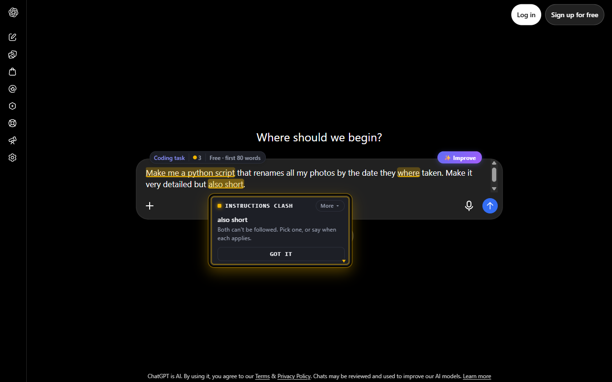

Prompt Refiner checks your prompt while you type and marks what will cost you a second message: the typo, the filler, and the detail the AI would otherwise have to ask you for.
Works on ChatGPT, Claude, Gemini and Grok. Free. Your prompts never leave your computer.
Add: your budget; what you will use it for; your country (prices and shops differ).
Marks appear as you type. Click one to see why, and fix it in one click. Nothing changes until you choose.
Typos and filler the AI doesn't need. Removing it changes nothing about the answer.
Could you possibly…What the AI would have to ask you, or guess. Adding it now saves a follow-up.
the best phone → your budget?Details that help the AI give you a precise answer, so you learn what works.
in a table, for beginners"hi! can you please tell me which is the best laptop to buy? thanks so much"
Premium picks well over a student budget, then a list of questions: what's your budget, what will you use it for, Apple or Windows…
2 / 5 · needs a second message
"Which is the best laptop to buy? My budget is about $800, I'm a university student (notes, Office, some light photo editing), and I live in Israel."
Three specific models around ₪2,700–3,000 at Israeli shops, a clear top pick, and what to look for in the screen for photo editing.
5 / 5 · done in one message
first-answer quality across 11 everyday tasks
tasks that still needed a follow-up message
prompts sent anywhere: every check runs on your device
Our own test, November 2026: each task sent to ChatGPT as written, and again after following the marks. Answers scored against checklists written before any answer was seen. Results depend on answering the questions it asks.


